Grêmio Náutico União · Porto Alegre
O verão tem encontro marcado no União.
Piscinas, tênis, amigos e tempo de qualidade com a família. Descubra um clube para aproveitar a estação — e estar junto o ano inteiro.
Converse com nossa equipe pelo WhatsApp.
Tem dias de piscina. Tem dias de tênis. Tem dias de ficar mais um pouco.
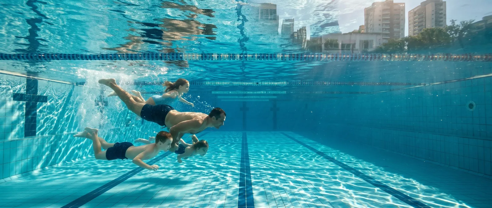
Um mergulho com as crianças, uma partida com os amigos, uma conversa que atravessa a tarde. No União, sempre existe um bom motivo para se encontrar.
Conversar pelo WhatsApp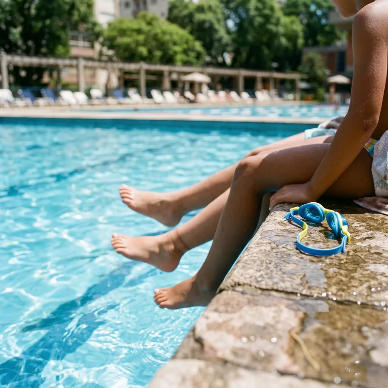
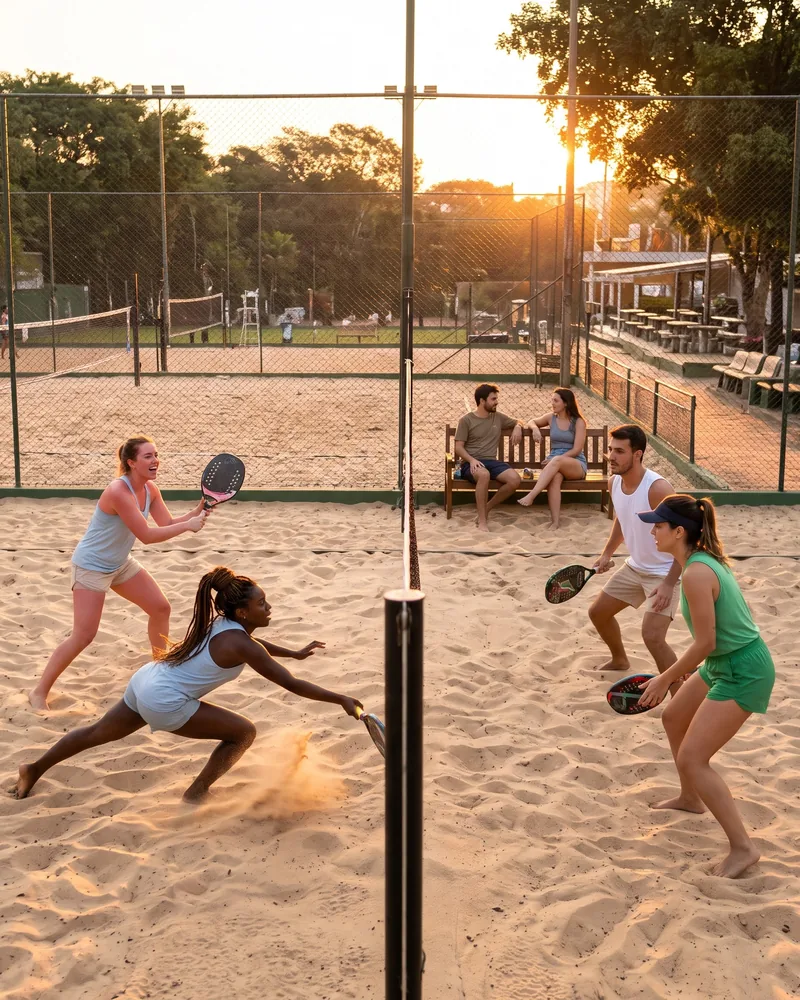
Um clube, quatro sedes
Quatro sedes. Muitos jeitos de viver o União.
Em diferentes pontos de Porto Alegre, espaços para encontrar amigos, aproveitar as piscinas, praticar esportes e passar bons momentos em família.
-
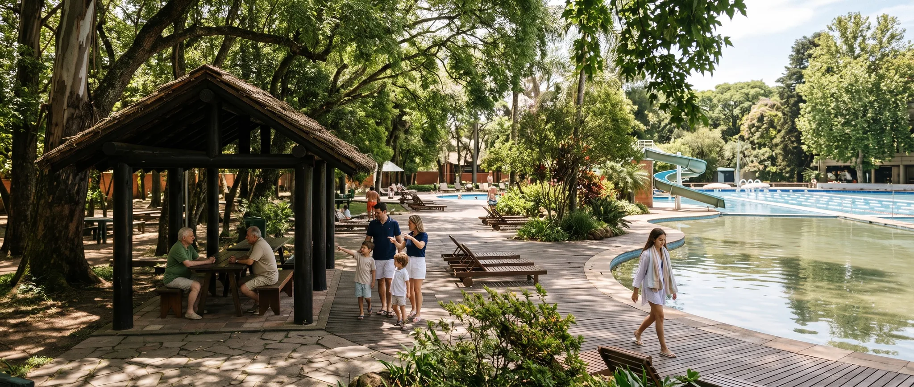
Ver localização da sede Alto Petrópolis (abre em nova aba)Alto Petrópolis
Piscinas, áreas verdes, quadras de tênis e espaços para reunir a família.
-
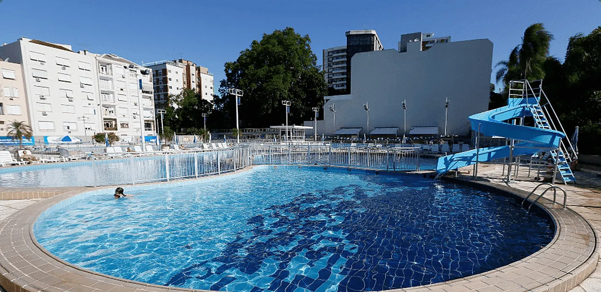
Ver localização da sede Moinhos de Vento (abre em nova aba)Moinhos de Vento
Piscinas, lazer e uma estrutura completa no coração de um dos bairros mais tradicionais da cidade.
-
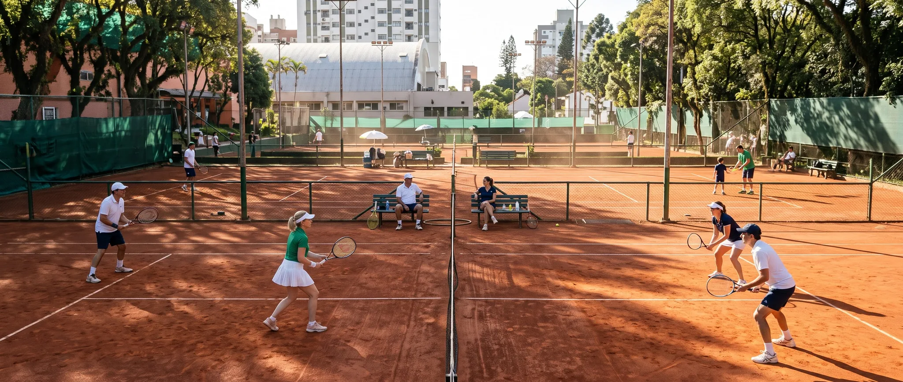
Ver localização da sede União Petrópole (abre em nova aba)União Petrópole
Tênis, piscinas e espaços de convivência para diferentes momentos da rotina.
-
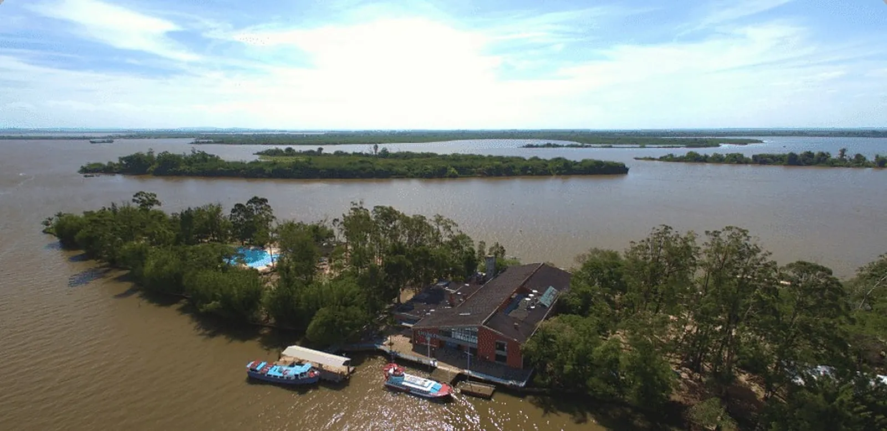
Ver localização do embarque para a Ilha do Pavão (abre em nova aba)Ilha do Pavão
Um encontro com a natureza, o Guaíba e uma atmosfera diferente dentro de Porto Alegre.
Os melhores encontros são aqueles que viram parte da rotina.
A mesa depois do jogo, os amigos que se reencontram, as crianças fazendo novas amizades. O União abre espaço para tudo isso — com a leveza de estar entre pessoas e lugares que fazem bem.
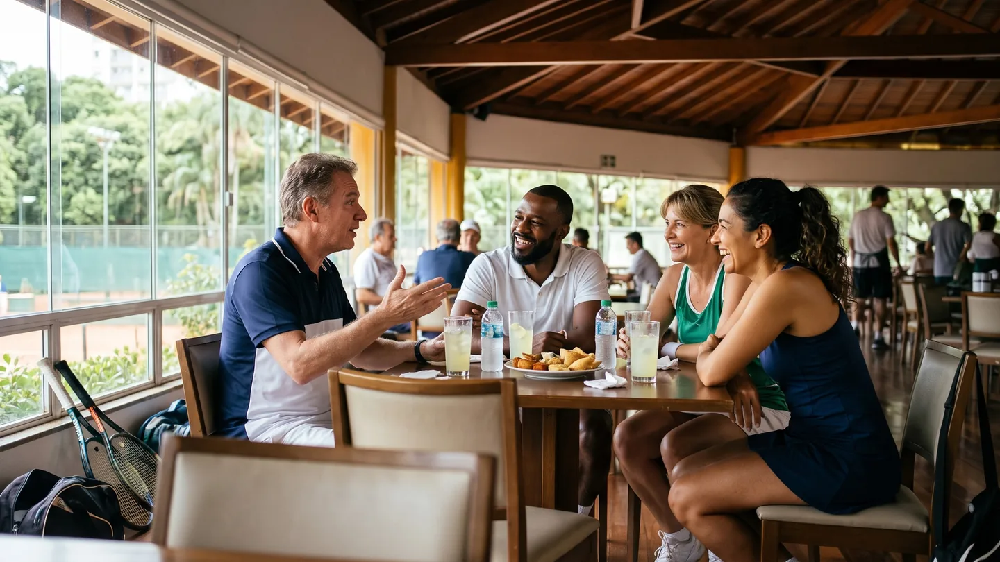
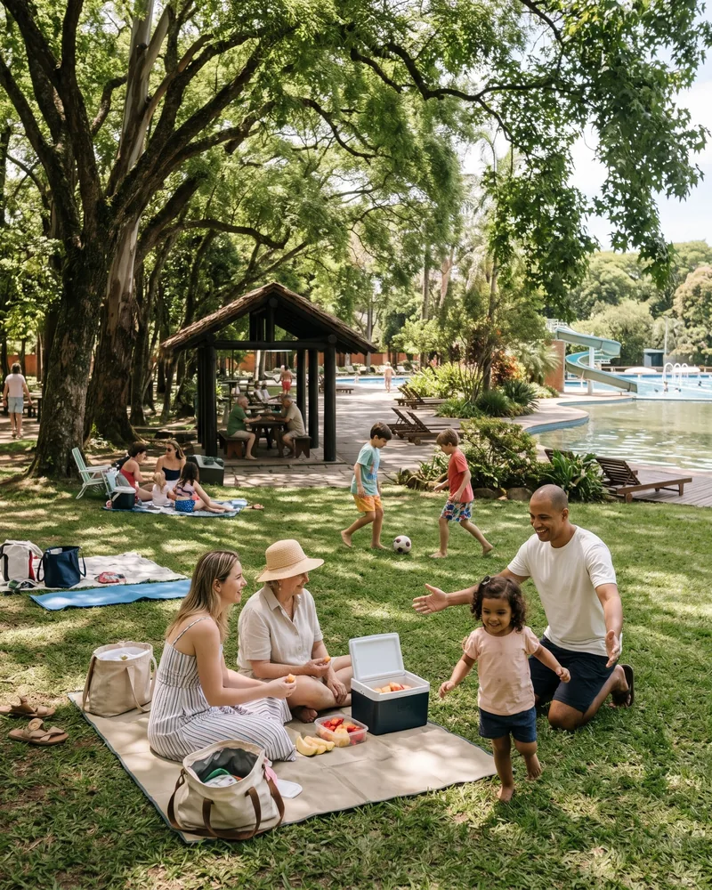
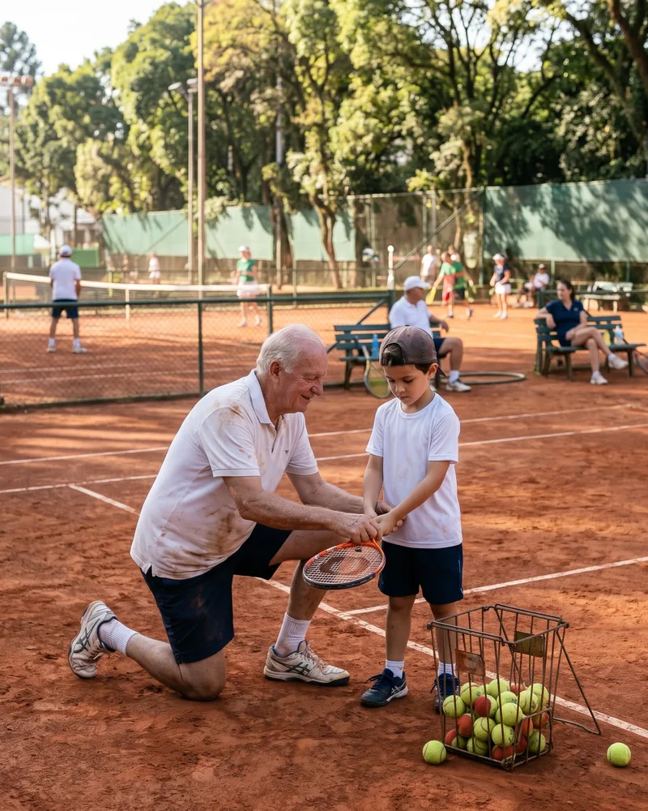
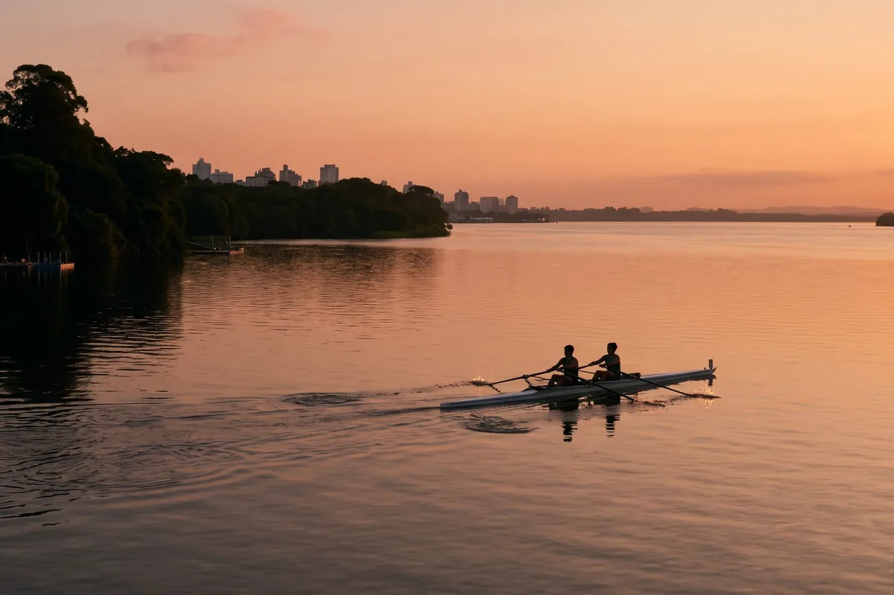
Desde 1906
O União faz parte de Porto Alegre. E pode fazer parte da sua história.
São 120 anos reunindo gerações em torno do esporte, da convivência e da vida em clube. Uma história que continua a cada novo encontro.
- 120anos de história
- 4sedes
- 1906em Porto Alegre
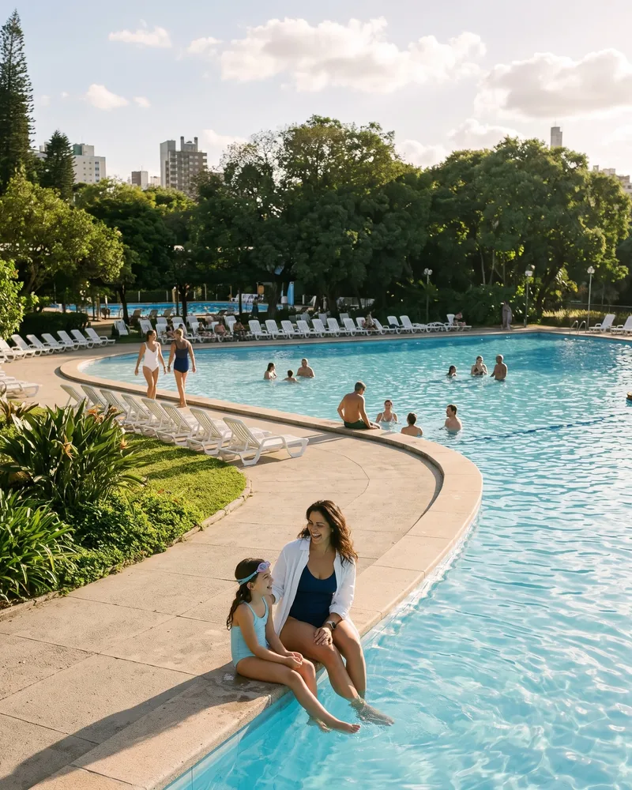
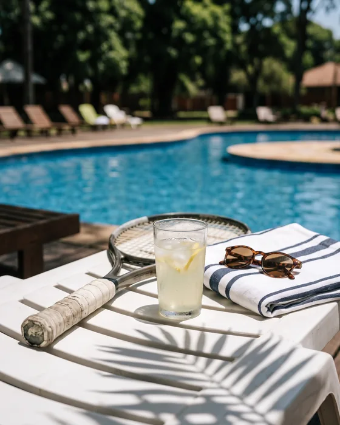
Como se associar
Quer fazer parte do União? Vamos conversar.
Nossa equipe apresenta as modalidades de associação, explica os valores e ajuda você a entender qual opção combina com o que procura para sua família.
Tire suas dúvidas diretamente com a equipe de associação.
Modalidades de associação
Título Patrimonial
Uma modalidade de vínculo patrimonial com o clube. Entenda condições, transferência e mensalidades com a equipe.
Título Contribuinte Efetivo
Uma alternativa de associação sem vínculo patrimonial. Consulte as condições de adesão e mensalidades.
Prefere deixar seu contato?
Recebemos seu contato.
Obrigado, a equipe de associação vai chamar você pelo WhatsApp em breve. Se preferir, já pode começar a conversa agora.
Abrir o WhatsApp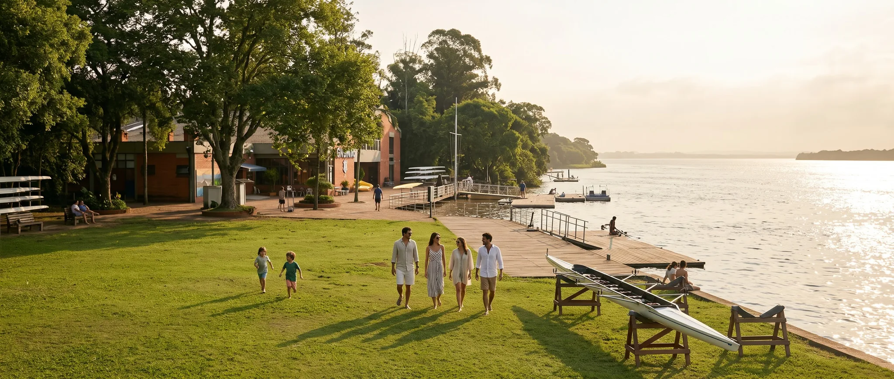
Seu próximo encontro pode ser no União.
O verão está chegando. As piscinas, as quadras e tantos bons momentos esperam por novos encontros. Que tal conhecer melhor o clube?
Quero conhecer o UniãoFale com nossa equipe pelo WhatsApp.